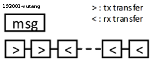

SPI Device Driver
Hanoi - Tuesday, January 29, 2019 - by VuTang
Introduction
SPI là chuẩn giao tiếp nối tiếp dựa trên mô hình Master-Slaves, trong đó một master có thể được kết nối đến một hoặc nhiều thiết bị slave. Một bus SPI thông thường có 4 tín hiệu:
- SCLK: clock dùng cho đồng bộ tín hiệu
- SS: Slave Select, dùng để đánh dấu thiết bị Slave nào được active để trao đổi dữ liệu. Pin này có thể được gọi bằng các tên khác như: CS (chip sellect), LE (Latch Enable), … Tín hiệu SS thông thường active mức thấp.
- MISO: dữ liệu vào của master
- MOSI: dữ liệu ra của master. Trong một số trường hợp, pin MISO/MOSI có thể được sử dụng chung trên một đường tín hiệu đảm nhiệm cả hai chức năng in/out.
Figure. SPI bus signals
SPI Subsystem in Linux
Các kiến thức trong technote này được khái quát hóa sau quá trình tìm hiểu hệ thống SPI sử dụng Cadence Controller và SPI-GPIO, do đó có thể không mang được tính tổng quát hóa lên toàn bộ các thiết bị SPI.
- spi.h: defines important data structures what are used for SPI subsystem.
- spi.c: SPI core APIs are implemented in this file.
SPI Device Driver Model
Trong Figure 1 thể hiện mô hình của một hệ thống SPI trong Linux, bao gồm:
- Về phần cứng, một SPI device (slave device) được kết nối với SPI controller thông qua một bus vật lý (các tín hiệu của SPI bus mô tả ở phần trước được thiết kế trên mạch cứng). Một SPI device được đặc mô tả bởi
struct spi_device. - Về phần mềm, hai thực thể phần cứng trên cần driver để giao tiếp và quản lý, driver cho controller (controller driver) và driver cho spi device (protocol driver - this deffinition is used in Linux Kernel official document). Linux Kernel provides a sub-system to manage these device drivers, called SPI-core. All controller driver & protocol driver have to register to Spi-core. Cấu trúc dữ liệu đặc quan trọng nhất cho một controller là
struct spi_master

Figure 1. Components in SPI Subsystem
SPI Message & Transfer
Thông tin trao đổi giữa controller và device được khái quát hóa trong Linux SPI subsystem thành dạng các message. Các message này được chia nhỏ thành các transfer. Linux cung cấp struct spi_message và struct spi_transfer để mô tả các đối tượng này. Các struct này đều được định nghĩa trong spi.h.

Figure. SPI msg has a list of SPI transfer
spi_message chứa một danh sách các transfer:
struct spi_message {
struct list_head transfers;
...
}
Quá trình duyệt toàn bộ transfers trong list có thể thực hiện như sau:
list_for_each_entry(xfer, &msg->transfers, transfer_list) {
...
}
this function is used in spi_transfer_one_message() - a default implementation of transfer_one_message() in spi.c.
See in Kernel Data Structure for more information about Linked List in device driver development.
For Engineer
So, what is mission for engineer in a SPI system?
-
Phát triển protocol driver: các ứng dụng trên tầng ứng dụng cần truy cập đến thông tin trên các SPI Device (ví dụ như đọc giá trị nhiệt độ từ một cảm biến, cấu hình tín hiệu clock cho một hệ thống...). Do đó nhiệm vụ đầu tiên của một kỹ sư là phát triển Protocol Driver để cung cấp các API giao tiếp để ứng dụng có thể truy cập đến phần cứng chứa giao diện SPI.
-
Phát triển controller driver: thông thường driver của controller thường được các nhà phát triển tích hợp kèm với controller. Nhiệm vụ của kỹ sư trong một số trường hợp là tiến hành thay đổi controller driver này cho phù hợp với hệ thống hiện tại. Ngoài ra, kỹ sư có thể phát triển thêm các controller driver để phù hợp với yêu cầu của hệ thống.
-
Bổ sung thêm một số chức năng cho SPI-Core: giao diện SPI với các tín hiệu như mục giới thiệu là giao diện chuẩn, trong khi các biến tấu của giao diện SPI trong thực tế là rất nhiều. Những biến tấu này yêu cầu kỹ sư phải hiểu sâu về SPI-Core để trong một số trường hợp có thể bổ sung thêm một số API. Về tư tưởng phát triển, quá trình viết một driver phải độc lập với Linux kernel, do đó hoạt động thay đổi và bổ sung vào SPI-Core này nên hạn chế vì rõ ràng can thiệp vào SPI-Core tức là ít nhiều can thiệp vào Linux Kernel.
Protocol Driver
Các phần khác của hệ thống (ví dụ như các ứng dụng trên user space, các kernel module khác) sử dụng các API của Protocol Driver để có thể giao tiếp được với SPI Device.
Tượng tự như controller driver và platform device driver, spi protocol driver cũng cần chứa các thủ tục cơ bản của một device driver.
- Khai báo spi driver
struct spi_drivervà đăng ký với kernel bằng macromodule_spi_driver(). Struct driver này chứa các con trỏ chỉ đến các hàm khởi tao (probe) và hàm hủy (remove) của driver, các hàm này sau khi được đăng ký sẽ được gọi bởi Kernel. - Khai báo id_table
struct spi_device_idchứa thông tin của các device mà driver này hỗ trợ.
Probing
Hàm probing của Protocol Driver có thể thực hiện chức năng như:
- Lấy thông tin của struct spi_device *spi lưu trữ nội bộ của module để sử dụng cho các API khác.
- Thực hiện cấu hình ban đầu cho spi device.
Các API khác
Giống như các Device Driver khác, protocol driver có chứa các API cung cấp các cổng giao tiếp với User Space thông quan Device File (/dev/), procfs, sysfs. Thông qua các system call như IOCTL, read, write..., các ứng dụng user space có thể truy cập đến thiết bị.
Vấn đề đặt ra là làm thế nào để Protocol Driver có thể giao tiếp được đến Spi device?
SPI-Write & SPI-Read
Protocol uses APIs from SPI-core to communicate with SPI device. These APIs are:
int spi_write(struct spi_device *spi, const void *buf, size_t len)
Take buffer (with length) as a pointer and then initialize a spi message. This message will be sent to slave device through spi controller (this procedure will be discussed detail in next part).
In example below,spi_writeis used in a function for writing a value to a register (specified by address) in device. An message with header (0x80), register address (addr) and expected value (val) will be sent to device.
int xxx_write(struct spi_device *spi, unsigned addr, unsigned val) {
unsigned char txbuf[3];
int rc;
txbuf[0] = 0x00;
txbuf[1] = addr & 0xFF;
txbuf[2] = val;
rc = spi_write(spi, txbuf, 3);
return rc;
}
int spi_write_then_read(struct spi_device *spi, const void *txbuf, unsigned n_tx, void *rxbuf, unsigned n_rx)
API này thường được sử dụng để đọc thanh ghi của một thiết bị. Một bản tin từ controller được gửi cho device về yêu cầu đọc thanh ghi, device phản hồi thông tin cho controller và trả lại kết quả cho protocl driver.
Trong ví dụ sau, user buffer có kích thước 3 bytes được sử dụng như tx_buf và rx_buf (2 bytes đầu tiên được sử dụng cho tx, 1 byte tiếp theo sử dụng cho rx). Message buf[0:1] được gửi đi đến device, kết quả trả lại của device được lưu trữ trong buf[2].
int xxx_read(struct spi_device *spi, unsigned addr) {
unsigned char buf[3];
int rc;
buf[0] = 0x80;
buf[1] = addr & 0xFF;
buf[2] = 0x00;
rc = spi_write_then_read(spi, buf, 2, &buf[2],1);
return (rc < 0 ? rc : buf[2]);
}
Bản chất hoạt động của các API trên sẽ được mô tả ở trong phần cuối của tài liệu này.
Controller Driver
Là kernel module giao tiếp trực tiếp với SPI Controller. SPI controller này có thể là Hard-controller (như controller của Cadence được tích hợp sẵn trong ngoại vi của SoC) hoặc cũng có thể là Soft-controller như SPI-GPIO (Bitbanging).
Probing controller
Initialize a spi master
Một controller sẽ được đặc trưng bởi kiểu dữ liệu: struct spi_master (được định nghĩa trong: linux/include/spi/spi.h). Quá trình khai báo controller được thực hiện trong hàm probe.
struct spi_master *master;
/*Allocate spi master*/
master = spi_alloc_master(&spi->dev, sizeof(*spi_ad9250));
if (!master)
return -ENOMEM;
Set spi master to spi private private data
Thông thường, con trỏ chứa địa chỉ của spi_master sẽ được lưu trữ trong các private data của device để thuận tiện cho quá trình sử dụng sau này. Cụ thể các API được sử dụng để lưu trữ master vào drvdata như sau:
- Nếu controller là một platform device pdev:
platform_set_drvdata(pdev, master); - Nếu controller là một spi device spi:
spi_set_drvdata(spi, master)
Register spi master
ret = spi_register_master(master);
if (ret) {
dev_err(&pdev->dev, "spi_register_master failed\n");
return -1;
}
Unregister spi master
Ví dụ đối với trường hợp controller là spi device:
struct spi_master *master = spi_get_drvdata(spi);
spi_unregister_master(master);
Declare devices in Device Tree
Quá trình khai báo một thiết bị trong device tree cần lưu ý đến:
- thuộc tính num-cs củm father-node
- Thuộc tính spi-max-frequency của node (why???)
spi@e0006000 {
compatible = "xlnx,zynq-spi-r1p6";
reg = <0xe0006000 0x1000>;
status = "okay";
interrupt-parent = <0x1>;
interrupts = <0x0 0x1a 0x4>;
clocks = <0x2 0x19 0x2 0x22>;
clock-names = "ref_clk", "pclk";
#address-cells = <0x1>;
#size-cells = <0x0>;
spi-fmcjesdadc1@0 {
#address-cells = <0x1>;
#size-cells = <0x0>;
compatible = "spi-ad9250";
reg = <0x0>;
spi-max-frequency = <0x989680>;
ad9517@1 {
#clock-cells = <0x1>;
compatible = "ad9517-1";
reg = <0x1>;
spi-max-frequency = <0x989680>;
adi,spi-3wire-enable;
clocks = <0x4 0x5>;
clock-names = "refclk", "clkin";
clock-output-names = "out0", "out1", "out2", "out3", "out4", "out5", "out6", "out7";
linux,phandle = <0x15>;
phandle = <0x15>;
};
ad9250-0@0 {
compatible = "ad9250";
reg = <0x2>;
spi-max-frequency = <0x989680>;
clocks = <0x6>;
clock-names = "adc_clk";
linux,phandle = <0x11>;
phandle = <0x11>;
};
Struct spi_master
Với tất cả các spi controller, spi controller driver cần có các hàm thủ tục để có thể giao tiếp được với các controller tương ứng. Các hàm và thủ tục này được chuẩn hóa và khái quát hóa thành một cấu trúc dữ liệu: struct spi_master.
Struct spi_master được định nghĩa trong spi.h.
About struct spi_master
- transfer_one_message: transfer a single message. SPI GPIO (bitbanging) uses this method.
- transfer_one: transfer a single spi_transfer. SPI Cadence controller uses this method.
Register devices from device
Đăng ký các thiết bị thuộc bus SPI mà spi master đang quản lý bằng API:
static void of_register_spi_devices(struct spi_master *master);
API này sẽ duyệt hết tất cả các child-node xuất hiện trên Device Tree và tiến hành thêm thiết bị đó vào hệ thống bằng API: spi_add_device
Controller Driver, Protocol Driver & SPI-Core
Mục này mô tả quá trình Protocol Driver thông qua các API để sử dụng các tài nguyên của Controller Driver.
spi_write/spi_read
Các protocol driver gọi đến các API như spi_write/spi_read/spi_write_then_read, bản chất trong các API này sẽ thực hiện các bước sau:
- Khai báo và cấp phát
struct spi_transfervàstruct spi_message
struct spi_transfer t = {
.tx_buf = buf,
.len = len,
};
struct spi_message m;
spi_message_init(&m);
spi_message_add_tail(&t, &m);
- Gọi đến
spi_sync- blocking/synchronous SPI data transfers.spi_syncsẽ gọi đến con trỏ hàmmaster->transfer, một phương thức cung cấp bởispi_master.
master->transfer(spi, message);
master->transfer
Đa phần trong các trường hợp, controller trong một lúc sẽ nhận được rất nhiều yêu cầu trao đổi thông tin với các device. Do đó, để tránh quá trình xung đột trong chia sẻ tài nguyên liên quan đến controller, SPI-core sử dụng mô hình hàng đợi cho các yêu cầu.
master->transfer làm việc như thế nào trong SPI subsytem?
-
Trong quá trình đăng ký
spi_mastercho controller driver, APIspi_register_masterkhởi tạo một hàng đợi chospi_masterbằng APIspi_master_initialize_queue(hàm này sẽ gọi đếnspi_init_queue). -
spi_init_queuenày sẽ thực hiện khởi tạo một kernel thread bằngkthread_run. SPI-core sử dụng khái niệmkworkervàkworkđể xử lý cácmaster->transfer.
master->transfer và kworker/kwork
Về tư tưởng kworker/kwork trong Linux Kernel, một kworker được cấp phát tài nguyên (CPU) sẽ được sử dụng đề hoàn thành các kwork.
Trong SPI-subsystem cũng hoạt động với cơ chế tương tự, mỗi master được khởi tạo một struct kthread_worker kworker bằng API init_kthread_worker trong spi_init_queue. spi_init_queue đồng thời khởi tạo một kernel thread dành riêng để thực hiện kthread_worker này.
Đối với Cadence Controller, hàm master->transfer được định nghĩa bằng spi_queued_transfer trong SPI core. Quá trình thực hiện của spi_queued_transfer bản chất là đưa spi_message vào work queue để chờ kwork xử lý.
Như vậy, các request message từ protocol driver được xếp thành hàng để kworker/kwork xử lý. Bản chất kwork->fn trỏ đến spi_pump_messages.
spi_pump_messages
Thực hiện "bơm" bản tin vào SPI bus bằng các gọi đến master->transfer_one_message
master->transfer_one_message
transfer_one_message có thể được định nghĩa trong controller driver. Trong trường hợp không được định nghĩa trong quá trình khai báo spi_master của controller driver, transfer_one_message được trỏ đến hàm spi_transfer_one_massge định nghĩa trong SPI core.
What's next?
-
spi_master có thể cần cung cấp hàm cho các phương thức như:
transfer_one_message,transfer_one. Vậy khác nhau giữa hai phương thức này là gì? -
Mô tả các trường hợp thiết kế SPI bus trong thực tế.
Refereneces
- Groking the Linux SPI Subsystem - Embedded Linux Conference 2017
- spi/spi-summary - Linux Kernel Document (link)
- The Linux Kernel - SPI